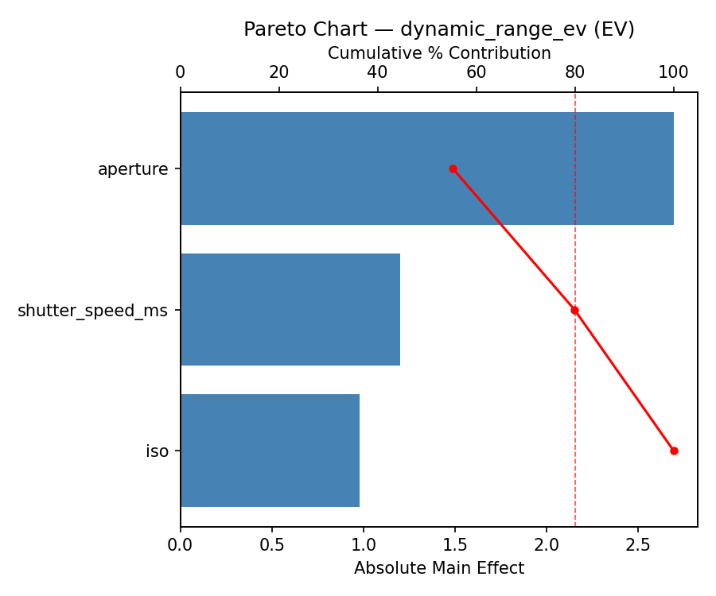
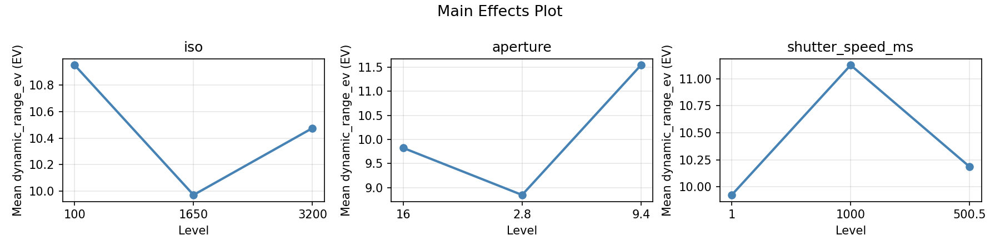
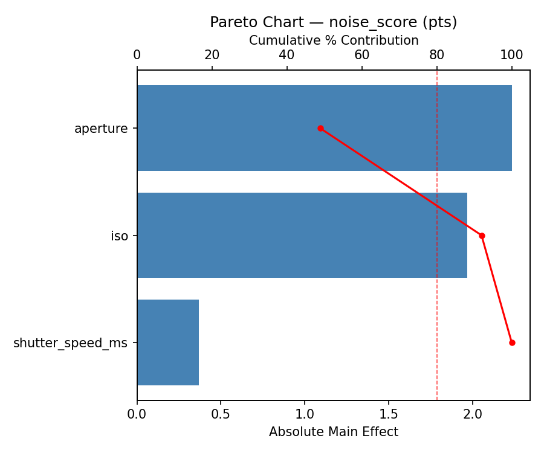
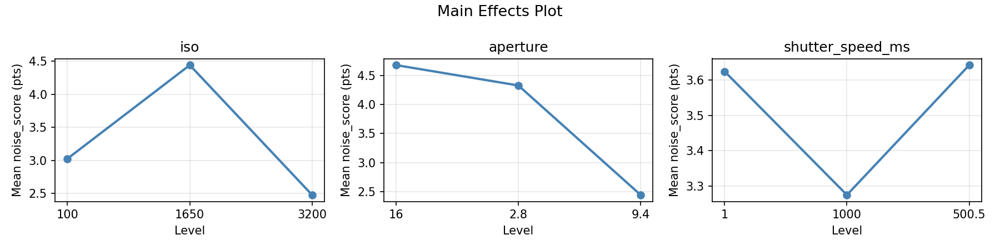
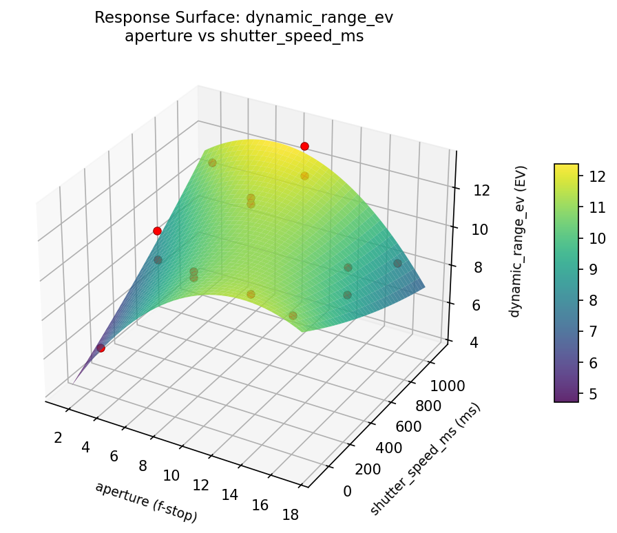
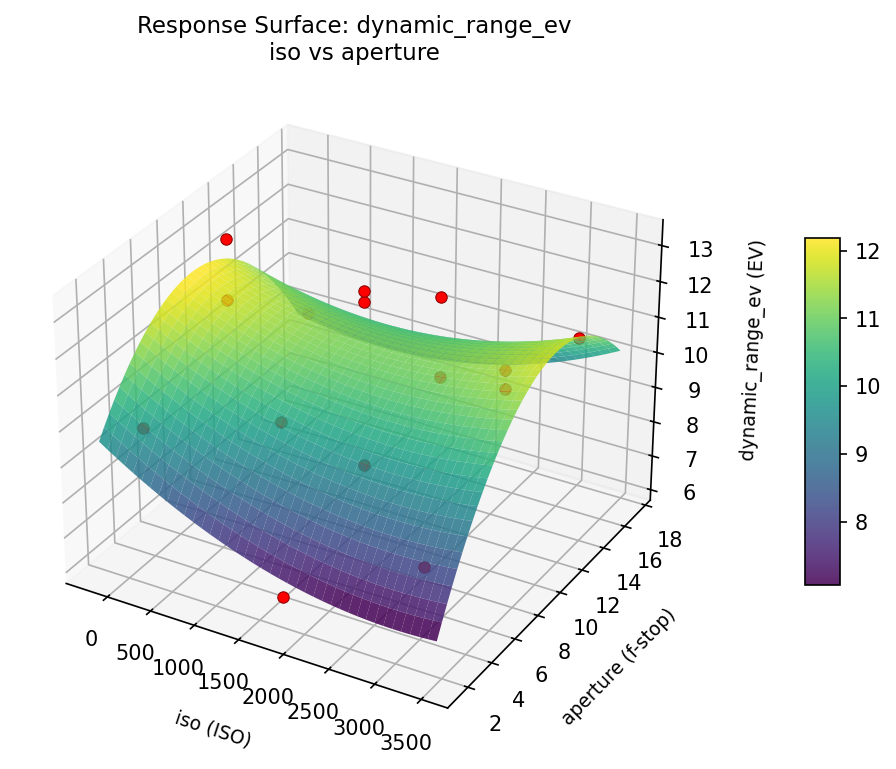
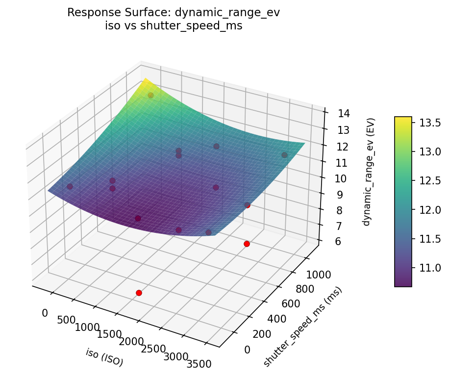
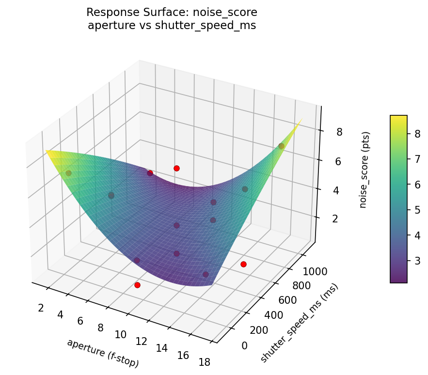
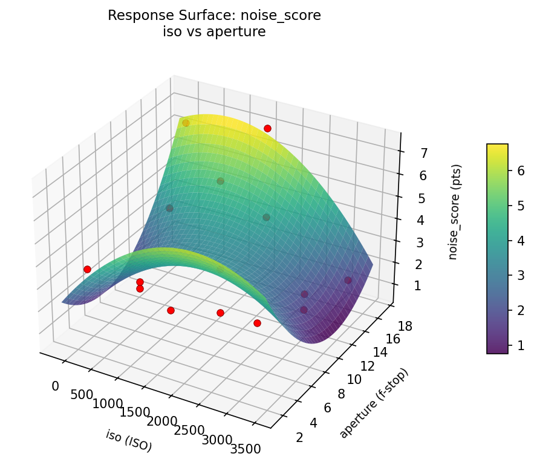
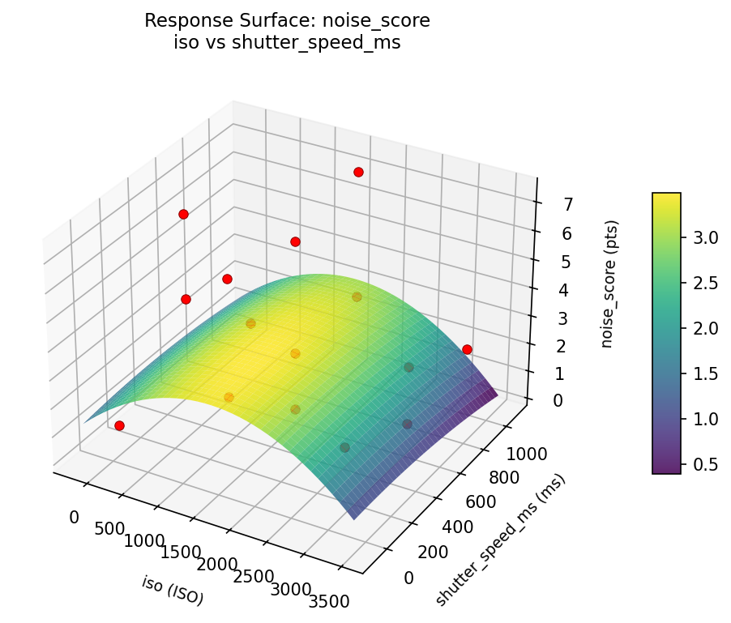

Experimental Setup
Factors
| Factor | Low | High | Unit |
|---|
iso | 100 | 3200 | ISO |
aperture | 2.8 | 16 | f-stop |
shutter_speed_ms | 1 | 1000 | ms |
Fixed: lens_mm = 24, white_balance = daylight
Responses
| Response | Direction | Unit |
|---|
dynamic_range_ev | ↑ maximize | EV |
noise_score | ↓ minimize | pts |
Configuration
{
"metadata": {
"name": "Landscape Photo Exposure",
"description": "Box-Behnken design to maximize dynamic range and minimize noise by tuning ISO, aperture, and shutter speed"
},
"factors": [
{
"name": "iso",
"levels": [
"100",
"3200"
],
"type": "continuous",
"unit": "ISO"
},
{
"name": "aperture",
"levels": [
"2.8",
"16"
],
"type": "continuous",
"unit": "f-stop"
},
{
"name": "shutter_speed_ms",
"levels": [
"1",
"1000"
],
"type": "continuous",
"unit": "ms"
}
],
"fixed_factors": {
"lens_mm": "24",
"white_balance": "daylight"
},
"responses": [
{
"name": "dynamic_range_ev",
"optimize": "maximize",
"unit": "EV"
},
{
"name": "noise_score",
"optimize": "minimize",
"unit": "pts"
}
],
"settings": {
"operation": "box_behnken",
"test_script": "use_cases/147_landscape_exposure/sim.sh"
}
}
Experimental Matrix
The Box-Behnken Design produces 15 runs. Each row is one experiment with specific factor settings.
| Run | iso | aperture | shutter_speed_ms |
|---|
| 1 | 1650 | 2.8 | 1 |
| 2 | 1650 | 9.4 | 500.5 |
| 3 | 3200 | 9.4 | 1000 |
| 4 | 3200 | 9.4 | 1 |
| 5 | 1650 | 9.4 | 500.5 |
| 6 | 1650 | 9.4 | 500.5 |
| 7 | 100 | 9.4 | 1000 |
| 8 | 3200 | 2.8 | 500.5 |
| 9 | 1650 | 2.8 | 1000 |
| 10 | 3200 | 16 | 500.5 |
| 11 | 100 | 9.4 | 1 |
| 12 | 1650 | 16 | 1000 |
| 13 | 100 | 2.8 | 500.5 |
| 14 | 100 | 16 | 500.5 |
| 15 | 1650 | 16 | 1 |
Step-by-Step Workflow
1
Preview the design
$ python doe.py info --config use_cases/147_landscape_exposure/config.json
2
Generate the runner script
$ python doe.py generate --config use_cases/147_landscape_exposure/config.json \
--output use_cases/147_landscape_exposure/results/run.sh --seed 42
3
Execute the experiments
$ bash use_cases/147_landscape_exposure/results/run.sh
4
Analyze results
$ python doe.py analyze --config use_cases/147_landscape_exposure/config.json
5
Get optimization recommendations
$ python doe.py optimize --config use_cases/147_landscape_exposure/config.json
6
Generate the HTML report
$ python doe.py report --config use_cases/147_landscape_exposure/config.json \
--output use_cases/147_landscape_exposure/results/report.html
Features Exercised
| Feature | Value |
|---|
| Design type | box_behnken |
| Factor types | continuous (all 3) |
| Arg style | double-dash |
| Responses | 2 (dynamic_range_ev ↑, noise_score ↓) |
| Total runs | 15 |
Analysis Results
Generated from actual experiment runs using the DOE Helper Tool.
Response: dynamic_range_ev
Top factors: aperture (55.3%), shutter_speed_ms (24.6%), iso (20.1%).
Pareto Chart

Main Effects Plot

Response: noise_score
Top factors: aperture (48.9%), iso (43.1%), shutter_speed_ms (8.1%).
Pareto Chart

Main Effects Plot

Response Surface Plots
3D surfaces fitted with quadratic RSM. Red dots are observed data points.
dynamic range ev aperture vs shutter speed ms

dynamic range ev iso vs aperture

dynamic range ev iso vs shutter speed ms

noise score aperture vs shutter speed ms

noise score iso vs aperture

noise score iso vs shutter speed ms

Full Analysis Output
RSM surface: rsm_dynamic_range_ev_iso_vs_aperture.png
RSM surface: rsm_dynamic_range_ev_iso_vs_shutter_speed_ms.png
RSM surface: rsm_dynamic_range_ev_aperture_vs_shutter_speed_ms.png
RSM surface: rsm_noise_score_iso_vs_aperture.png
RSM surface: rsm_noise_score_iso_vs_shutter_speed_ms.png
RSM surface: rsm_noise_score_aperture_vs_shutter_speed_ms.png
=== Main Effects: dynamic_range_ev ===
Factor Effect Std Error % Contribution
--------------------------------------------------------------
aperture 2.6929 0.5153 55.3%
shutter_speed_ms 1.2000 0.5153 24.6%
iso 0.9786 0.5153 20.1%
=== Summary Statistics: dynamic_range_ev ===
iso:
Level N Mean Std Min Max
------------------------------------------------------------
100 4 10.9500 1.7711 9.3000 13.2000
1650 7 9.9714 2.4844 6.2000 12.8000
3200 4 10.4750 1.5064 8.3000 11.7000
aperture:
Level N Mean Std Min Max
------------------------------------------------------------
16 4 9.8250 1.1177 8.5000 10.8000
2.8 4 8.8500 2.1048 6.2000 11.1000
9.4 7 11.5429 1.7634 7.9000 13.2000
shutter_speed_ms:
Level N Mean Std Min Max
------------------------------------------------------------
1 4 9.9250 2.4998 6.2000 11.5000
1000 4 11.1250 1.9602 8.5000 13.2000
500.5 7 10.1857 1.9222 7.9000 12.8000
=== Main Effects: noise_score ===
Factor Effect Std Error % Contribution
--------------------------------------------------------------
aperture 2.2321 0.6032 48.9%
iso 1.9679 0.6032 43.1%
shutter_speed_ms 0.3679 0.6032 8.1%
=== Summary Statistics: noise_score ===
iso:
Level N Mean Std Min Max
------------------------------------------------------------
100 4 3.0250 2.6937 0.8000 6.6000
1650 7 4.4429 2.6165 0.8000 7.3000
3200 4 2.4750 0.8655 1.5000 3.5000
aperture:
Level N Mean Std Min Max
------------------------------------------------------------
16 4 4.6750 2.7427 1.5000 7.3000
2.8 4 4.3250 2.0073 2.9000 7.3000
9.4 7 2.4429 2.0695 0.8000 6.7000
shutter_speed_ms:
Level N Mean Std Min Max
------------------------------------------------------------
1 4 3.6250 2.6247 1.1000 7.3000
1000 4 3.2750 2.8194 0.8000 7.3000
500.5 7 3.6429 2.2912 0.8000 6.7000
Pareto chart (dynamic_range_ev): use_cases/147_landscape_exposure/results/analysis/pareto_dynamic_range_ev.png
Pareto chart (noise_score): use_cases/147_landscape_exposure/results/analysis/pareto_noise_score.png
Main effects (dynamic_range_ev): use_cases/147_landscape_exposure/results/analysis/main_effects_dynamic_range_ev.png
Main effects (noise_score): use_cases/147_landscape_exposure/results/analysis/main_effects_noise_score.png
Optimization Recommendations
=== Optimization: dynamic_range_ev ===
Direction: maximize
Best observed run: #14
iso = 1650
aperture = 9.4
shutter_speed_ms = 500.5
Value: 13.2
RSM Model (linear, R² = 0.0436, Adj R² = -0.2173):
Coefficients:
intercept +10.3667
iso +0.3500
aperture -0.3250
shutter_speed_ms +0.2750
RSM Model (quadratic, R² = 0.7106, Adj R² = 0.1896):
Coefficients:
intercept +11.5667
iso +0.3500
aperture -0.3250
shutter_speed_ms +0.2750
iso*aperture +0.5500
iso*shutter_speed_ms -1.7000
aperture*shutter_speed_ms +0.3500
iso^2 -2.4833
aperture^2 -0.1333
shutter_speed_ms^2 +0.3667
Curvature analysis:
iso coef=-2.4833 concave (has a maximum)
shutter_speed_ms coef=+0.3667 convex (has a minimum)
aperture coef=-0.1333 concave (has a maximum)
Notable interactions:
iso*shutter_speed_ms coef=-1.7000 (antagonistic)
iso*aperture coef=+0.5500 (synergistic)
aperture*shutter_speed_ms coef=+0.3500 (synergistic)
Predicted optimum (from quadratic model):
iso = 1650
aperture = 2.8
shutter_speed_ms = 1
Predicted value: 12.2000
Model quality: Good fit — general trends are captured, some noise remains.
Factor importance:
1. iso (effect: 2.9, contribution: 65.8%)
2. shutter_speed_ms (effect: 0.8, contribution: 19.1%)
3. aperture (effect: 0.6, contribution: 15.0%)
=== Optimization: noise_score ===
Direction: minimize
Best observed run: #7
iso = 1650
aperture = 16
shutter_speed_ms = 1000
Value: 0.8
RSM Model (linear, R² = 0.0625, Adj R² = -0.1932):
Coefficients:
intercept +3.5400
iso +0.7625
aperture +0.0500
shutter_speed_ms -0.1125
RSM Model (quadratic, R² = 0.8187, Adj R² = 0.4924):
Coefficients:
intercept +1.8667
iso +0.7625
aperture +0.0500
shutter_speed_ms -0.1125
iso*aperture -0.3000
iso*shutter_speed_ms +1.8750
aperture*shutter_speed_ms -0.7500
iso^2 +3.3042
aperture^2 -0.0708
shutter_speed_ms^2 -0.0958
Curvature analysis:
iso coef=+3.3042 convex (has a minimum)
shutter_speed_ms coef=-0.0958 negligible curvature
aperture coef=-0.0708 negligible curvature
Notable interactions:
iso*shutter_speed_ms coef=+1.8750 (synergistic)
aperture*shutter_speed_ms coef=-0.7500 (antagonistic)
Predicted optimum (from quadratic model):
iso = 3200
aperture = 9.4
shutter_speed_ms = 1000
Predicted value: 7.6000
Model quality: Good fit — general trends are captured, some noise remains.
Factor importance:
1. iso (effect: 4.1, contribution: 83.8%)
2. shutter_speed_ms (effect: 0.4, contribution: 9.0%)
3. aperture (effect: 0.3, contribution: 7.2%)